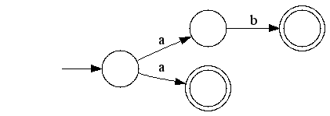

dk.brics.automaton is a Java regex package whose main claim to fame is that it is significantly faster then all other Java regex libraries, including the one in the JDK. How can this be?
Anders Møller's dk.brics.automaton is a Java regex
package whose main claim to fame is that it is significantly faster
then all other Java regex libraries, including the java.util.regex classes in the JDK.
Like many things in computer science, the speed gains come at a price. In this case, the regular expression language supported is not as rich as the Perl 5 syntax that is prevalent in today's tools, including the JDK implementation (which has only minor variations from Perl 5). That said, for some applications this trade-off may be worth it. (For example, it is going to be used in Nutch - see discussion on this thread.) In the rest of this post I shall try to explore this trade-off a bit more.
Let's start by looking at how to use the new library. First, here's a JUnit test that does a simple match using the java.util.regex classes:
public void testJdkRegex() {
Pattern p = Pattern.compile("a|ab");
Matcher m = p.matcher("ab");
assertTrue(m.matches());
}
It's possible to do the same in one line: assertTrue("ab".matches("a|ab")), but I want to compare it with the equivalent using dk.brics.automaton:
public void testAutomatonRegex() {
RegExp re = new RegExp("a|ab");
RunAutomaton ra = new RunAutomaton(re.toAutomaton());
assertTrue(ra.run("ab"));
}
Some of the naming may seem odd: the RunAutomaton class with its run method in place of the Matcher class with its matcher method. This is because dk.brics.automaton is actually a library for Finite-State Automata (FSA) - also known as Finite State Machines - and any regular expression can be implemented as an FSA. Indeed, the RegExp class is simply a vehicle for compiling string representations of regular expressions into Automaton instances. So, the naming can be understood as simply exposing the implementation to the user.
Let's look now at the issue of determinism for this is at the heart of what makes dk.brics.automaton different.
The regular expression a|ab is compiled into the FSA shown here:

Circles represent states. Arrows represent transitions with the label showing the character that matches. The start state is pointed to by the incoming arrow on the left. End states are shown as double circles. For this FSA you can see the two paths for the matches a and ab.
This FSA is in fact non-deterministic, known as a Non-deterministic Finite Automaton (NFA). If you are in the start state and you read an a character then there is more than one option to take - you can either take the upper branch or the lower branch. There are various ways of coping with the non-determinism (e.g. look-ahead, or backtracking), but suffice to say, it makes the NFA algorithm more complex. If the FSA is deterministic (a Deterministic Finite Automaton, or DFA), everything is so much easier - and, crucially, so much faster. You have a simple operation to carry out after seeing each character of input: is there a transition that matches? If so, carry on till the end, otherwise stop as the match failed.
This is the trick that dk.brics.automaton uses. It converts NFAs into DFAs. Here's what it does to a|ab:
Now there is only one choice in the start state, so it is deterministic.
So what's the catch? Why didn't Sun use the algorithm for converting NFAs to DFAs? FSAs are a great way to implement regular expressions, but unfortunately, the regular expressions we use are quite a bit more advanced than "regular expressions" in the strict theoretical sense. As Jeffrey Friedl says in Mastering Regular Expressions
... you should probably stop calling it an NFA, and start using the phrase "nonregular expressions," since that describes (mathematically speaking) the new situation. No one has actually done this, so the name "NFA" has lingered, even though the implementation is no longer (mathematically speaking) an NFA.
The best example of a feature that has been added to regular expressions is the support for back references. DFAs cannot support back references, so dk.brics.automaton can't support them (see the javadoc for the regular expression language that it does support). The JDK regex implementation can, since it is NFA-based.
The bottom line is that the JDK regex implementation supports a rich set of regular expressions, whereas dk.brics.automaton supports only the basic features. If you are not concerned about speed - for example, you are just doing a few matches on strings of modest length - then use the JDK implementation. However, if regular expressions are a bottleneck in your program and you don't need advanced regex features, then dk.brics.automaton might be a great fit.
dot program in Graphviz, which was very easy, since the Automaton class provides a handy toDot() method.